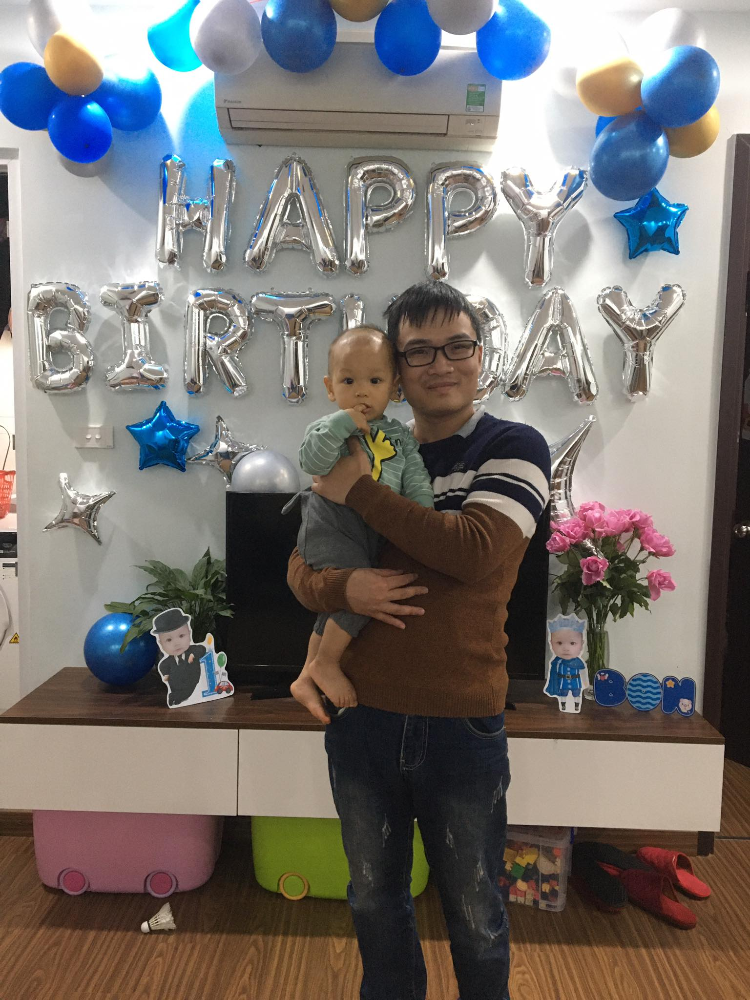

|  |
THÔNG TIN CÁ NHÂNTên: Lý Quốc Hưng Sinh Nhật: 07/12/1994
Địa chỉ: Yên Nghĩa, Hà Đông, Hà Nội. SDT: 0963766894 Email: quochung71294@gmail.com |
|---|
Tôi sinh ra và lớn lên tại thị xã Sơn Tây, Hà Nội. Sáu tuổi tôi đã được tiếp xúc với máy tính, va từ đó trong tôi đã thắp lên một ngọn lửa đam mê, mong muốn được tìm tòi, khám phá, hiểu biết hơn về máy tính. Tuy rằng khi thi đại học không thể đủ điểm vào ngành mình mong muốn, tuy rằng giờ đã 26 tuổi rồi, nhưng đam mê vẫn còn đó, chưa bao giờ là quá muộn cả, tôi vẫn muốn được học máy tính. Vậy là tôi quyết định từ bỏ công việc hiện tại, theo học tại FPT-Aptech để theo đuổi đam mê của mình. Mong rằng trong lớp ta mọi người hãy luôn giúp đỡ lẫn nhau vượt qua khó khăn, không ngừng học tập trau dồi kiến thức trong 2 năm học tập ở đây.